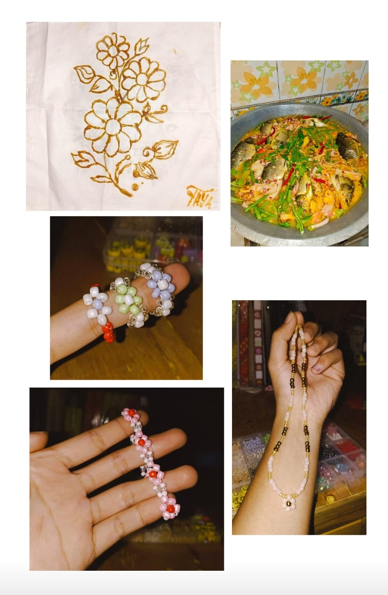

Aktivitas Yayaa
Prestasi
Pada tahun ini lebih tepatnya bulan November, saya mendapatkan kesempatan untuk mengikuti ajang bergengsi di negara kita. Ini adalah sebuah moment yang sangat berharga dalam hidup saya selama saya mengikuti beladiri JUDO. Saya baru pertama kali mengikuti PON Aceh-Sumut dan saya sangat bersyukur karna saya bisa membanggakan provonsi Banten dengan membawa pulang medali Perunggu di kategori Ju-No-Kata Putri atau bisa di bilang nomor ganda Putri.Saya berharap dengan menjadi juara di kejuaran bergengsi ini bisa menjadi motivasi saya untuk persiapan di kejuaran yang akan datang.

Skill
Di bidang komputer saya menguasai beberapa aplikasi desain. Bidang kesenian saya bisa menari, membatik dan membuat beberapa kerajinan tangan. Di bidang memasak, saya bisa membuat kue dan bisa memasak apapun sesuai mood dan perut saya.
Hobi
Saya sangat suka Traveling & Kulineran. Biasanya saya melakukan itu bersama keluarga saya. Tetapi semnjak saya berpacaran dengan abil, saya merasa sangat senang karena kita memiliki kesamaan. Beberapa waktu yang lalu saya mengunjungi Daerah Istimewa Yogyakarta dan di temani oleh orang yang spesial yaitu Abil ♡. Kami mengunjungi banyak desitinasi wisata dan mencicipi makanan khas Yogyakarta.